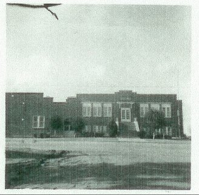

The Sawyer Years
When the school year of '55-'56 came to a close, my family had to make a big decision back in Gove. They knew I would soon be able to leave the hospital and return to a normal, yet new, life. The trouble was that the house that I left nine months earlier would not be appropriate for me in a wheelchair. There were a lot of steps to climb at the school as well. In short, the physical environment just wasn't a good fit for me. Therefore, it was time to look for greener pastures.
And greener pastures were found, further south this time. The place? A little town south of Pratt, Kansas, called Sawyer. It was a small faming community, with a very small school system. Actually there were two systems, one for the high school and one for the grade school. There were approximately 30 students in the high school and about twice that many in the grade school. My father was the secondary principal and taught classes just as he had done at Gove. But it was Donna who made the real sacrifice for the family this year. She decided not to seek work this year, rather to stay at home to give me physical therapy. That was made convenient because the house we were able to rent was just one block away from the schools. Unfortunately the school did have a lot of steps, but they were outside of the building. (See photo. Our house was just behind and to the left of the person who took this photo.)

Once I was inside, every classroom that I needed was on one level. Ah, the memories of algebra! Now things were different for me. I had a good book and a real course in the topic. Why I even remember the text. It was Algebra for Problem Solving: Book One, by Freilich, Berman, & Johnson. Just as my mother's high school Spanish textbook had affected my life and dreams, this book had an even more profound effect on my professional career. I think I now knew that I wanted to be a math teacher. In fact, my math classes were held in the room behind the upper right tier of windows. One unusual thing was that while I was a sophomore (10th grader), all my classmates were freshmen (9th graders). Having begun my schooling one year earlier than normal and later losing a year in the hospital put me right back on track where I should have been in the first place. Strange how things turn out sometimes, isn't it.
To be continued...
| Comments? Send e-mail. |
Back to top |
Go back to Contents |